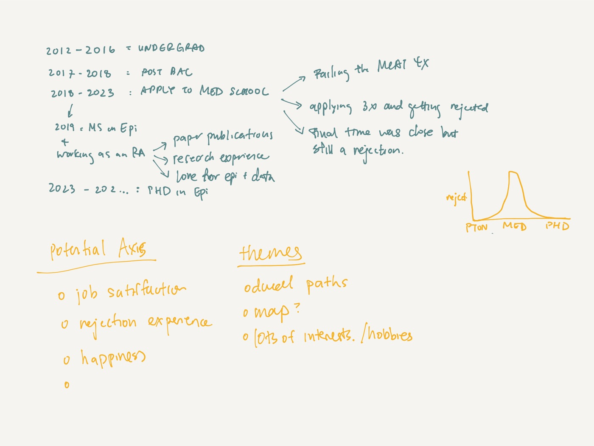
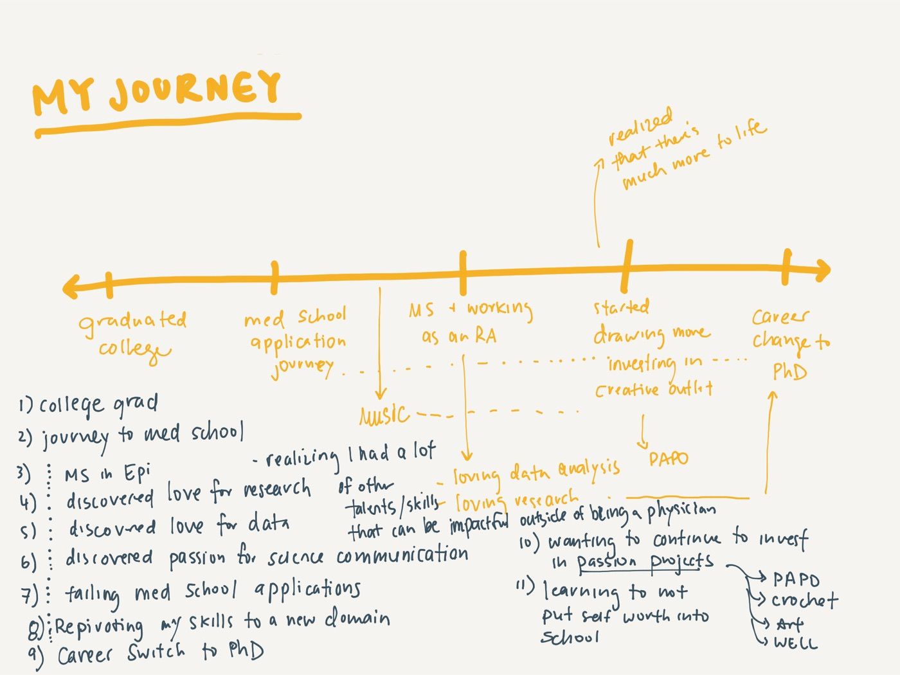
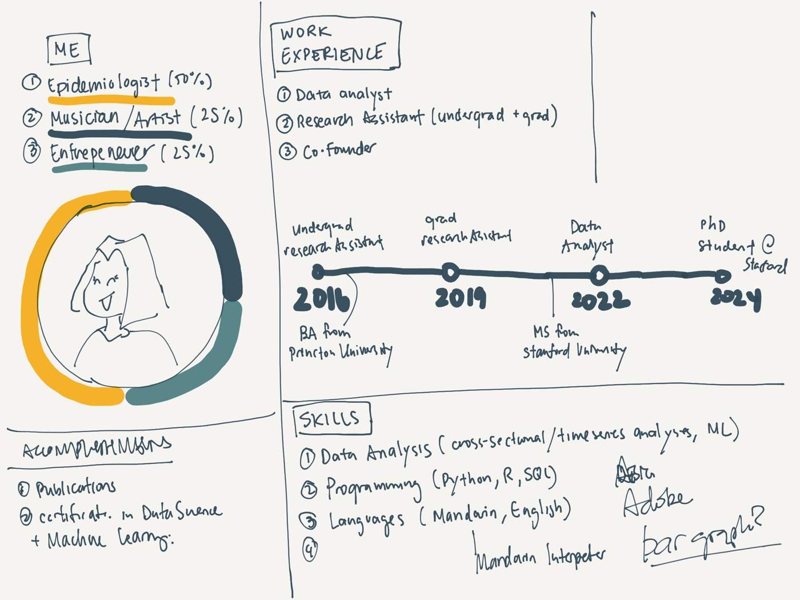
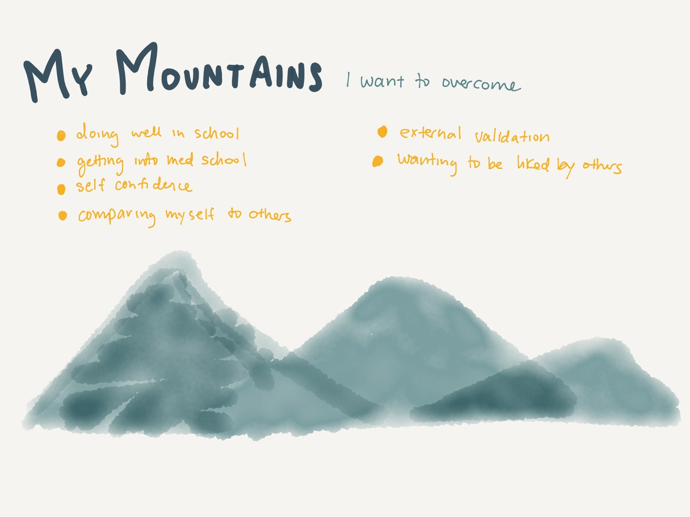
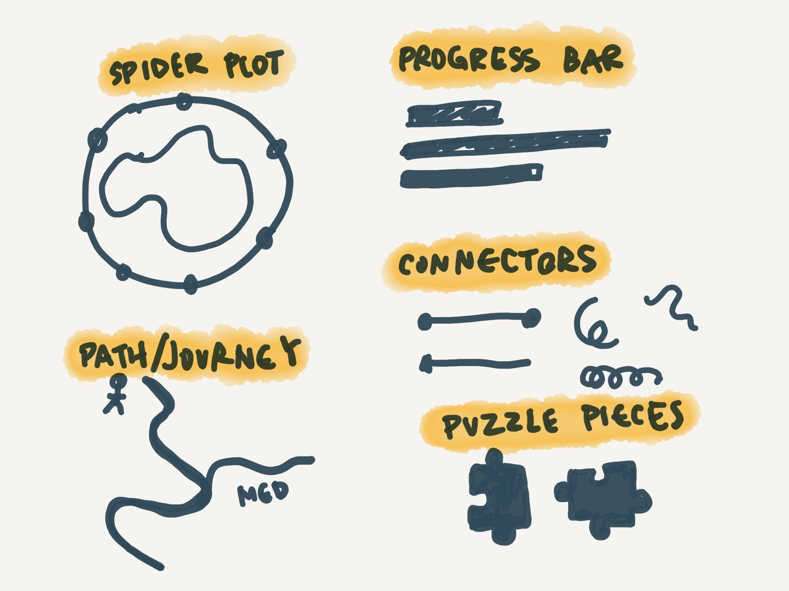
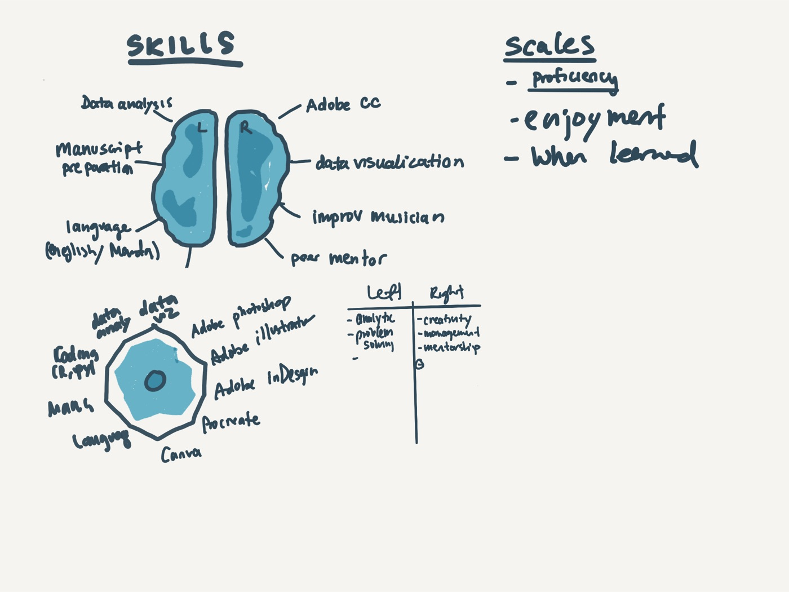
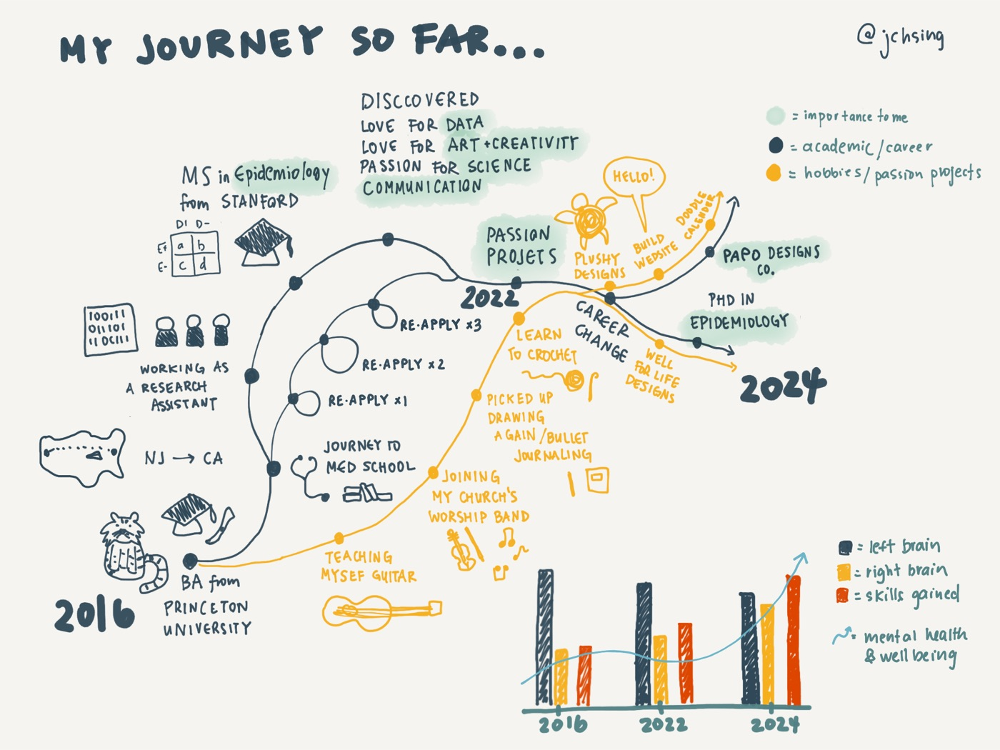
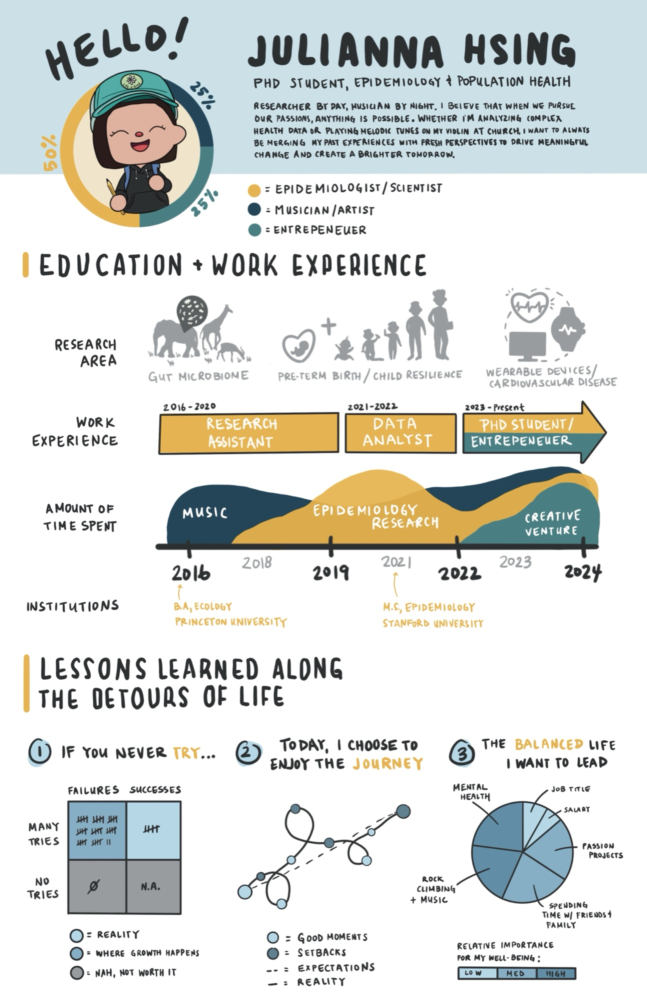

visual resume
visualizing my academic and career journey through a data-driven story
background: traditional résumés and CVs summarize a professional journey as concisely as possible, leaning heavily on formulaic bullet points and flattened forms. While that approach is often necessary and valuable, there is a lot of uncharted territory when it comes to the creative expression of your journey, your interests, and the multi-dimensional form of your unique story.
purpose: to visualize the different facets of an academic and career journey in a way that tells a compelling story about the data of your life to date — highlighting important transition points and the pivotal discoveries, moments, and experiences that have shaped your world view and interests. What qualities of these transition points influenced a change in shape or direction?
I wanted to design a resume that not only highlighted my accomplishments but also gave readers a glimpse of my creative personality. My goal is for this visual resume to convey my rigorous scientific training, extensive research experience, and desire to continually self-reflect, grow, and improve.
idea sketching



working it out




final product
